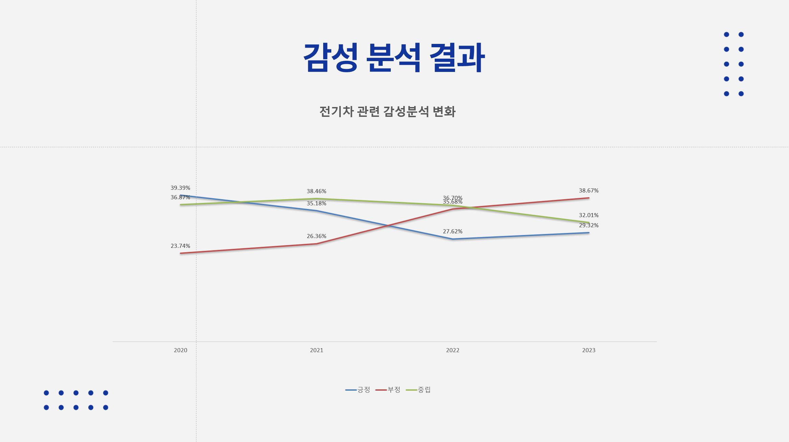

전기차 키워드 기사 데이터 수집 및 분석
- 분석 결과:
- 분석 결과에 따르면 전기차에 대한 여론은 갈수록 나빠지고 있는것으로 보입니다.
- 2020년~2024년 년도별 다음사 뉴스 데이터 1000개를 웹 크롤링 및 감성 분석한 결과
‘전기차’에 대한 부정적 기사 제목의 수가 2022년 부터 긍정적 기사의 제목의 수보다 더욱 많아졌기 때문입니다.
- 이런 비즈니스적 현상은 시장이 초기 시장에서 중기 시장으로 넘어갈 때 잠시 수요 정체가 일어나는 캐즘 현상으로 보인다는 분석도 있습니다.
- 사용 프로그램:
- 프로그래밍 및 데이터 분석을 위한 python, pandas
- 정적 웹 크롤링을 위한 BeautifulSoup
- 한국 자연어 처리 및 감성분석을 위한 kiwipiepy, OpenAI API
